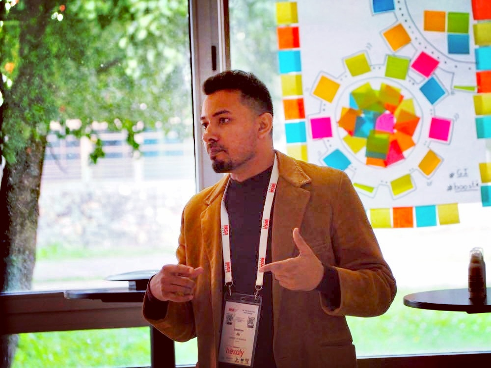

Zeeshan ALI (PhD, PMP)
Digital Twin & Systems Engineer
A sociable, dynamic and rigorous professional with hands-on industry experience and academic training across engineering and computer science. I research and build urban digital twins at IMS Lab (CNRS, University of Bordeaux) — working across modeling & simulation, complex systems engineering, and enterprise interoperability.

A little about me
The short version of a long, cross-country journey through engineering, IT and research.
I'm a sociable, dynamic and rigorous professional with hands-on experience and academic training spanning engineering and computer science. My work today focuses on urban digital twins — building the systems-engineering foundations that let cities model, simulate and understand themselves, as a researcher at IMS Lab (CNRS, University of Bordeaux).
Before research, I spent several years in industry across IT project management, ERP systems, production & quality engineering, and mechanical operations across Pakistan, the UAE and Luxembourg — experience that now shapes how I think about complex, real-world systems rather than just theoretical ones. I'm also a certified PMP (Project Management Professional).
Alongside my research, I lecture on the Master in Enterprise Engineering at the University of Bordeaux, supervise bachelor's and master's internships and projects, and review papers and book chapters for journals and conferences in modeling & simulation and digital twins.
Location
Pessac, Bordeaux, France
Languages
English (C1) & French (B2) · Urdu & Punjabi (Native)
Focus areas
Digital twins · Modeling & simulation · Systems engineering · MBSE
Driving licence
Category B
Professional experience
From factory floors to digital twin labs — six roles across four countries.
- Modeling & simulation (M&S)
- Digital twin engineering
- Complex systems engineering
- Systems theory applied to large-scale systems
- IT project management
- Change management
- Identifying client needs & requirements
- Preparing SLAs & PLAs
- Project outsourcing
- Overseeing every project delivery stage
- ERP data analysis (SAP, BOFC & other apps)
- IT support (Tier 1 & Tier 2)
- Process modeling & documentation
- Audit reports, SLAs, PLAs & GTRS prep
- ISO standards & KPI implementation in the ERP system
- Continuous improvement initiatives
- ERP-based production analysis & planning
- Resource planning
- Production forecasting & variance analysis
- Quality control (QA/QC) & audit documentation
- MRP-II methods for resource & capacity planning
- Production planning
- Tread depth testing (cracks, molds, bubbles)
- Balance testing for proper spinning
- X-ray testing for microstructural defects
Academic experience
Lecturing, supervision and peer review alongside my research at the University of Bordeaux.
Taught Master 2 (M2) courses combining lectures (CM), tutorials (TD) and lab sessions (TP), for a total of 135.25 hours (TD-equivalent). Responsibilities: course creation, design of tutorial/lab/project and exam subjects, teaching, student supervision, examination & assessment, and course coordination.
| Academic year | Status | Course | Format | Hours (TD-eq.) | Students |
|---|---|---|---|---|---|
| 2026–2027 | Contract Lecturer | Enterprise Modeling (EMO) | CM 11h / TD 24h | 40.50 | 16 |
| 2026–2027 | Contract Lecturer | Information Systems & Interoperability (ISI) | CM 1.5h / TD 11.5h / TP 12h | 21.75 | 7 |
| 2026–2027 | Contract Lecturer | Performance & Continuous Improvement (PCI) | CM 6h / TD 9h | 18.00 | 16 |
| 2025–2026 | Voluntary | Information Systems & Interoperability (ISI) | CM 6h / TD 14h | 23.00 | 19 |
| 2024–2025 | Contract Lecturer | Performance & Continuous Improvement (PCI) | CM 6h / TD 23h | 32.00 | 22 |
| Total teaching load | 135.25 | ||||
Wrote and drafted internship subjects and proposals, interviewed and ranked candidates, recruited the most suitable ones, and supervised them throughout their internships.
- Supervised 3 master students' internships: 3D urban modeling for realistic urban infrastructure; data patrimony for the UBUDT; UDT platform development for data/model/stakeholder integration.
- Co-supervised 3 bachelor students' internships: energy production modeling (System Dynamics); energy consumption modeling (Agent-Based); mobility modeling (Discrete-Event).
- Supervised 2 master projects (3 students each): digital twin for a surgical robot; human-off-the-loop integration for UDTs.
- Co-supervised 2 master students' internships and projects: VR integration with the UDT; Sustainable Aviation Fuel (SAF) supply chain traceability.
- Co-supervised 1 master student's internship: energy consumption modeling (Agent-Based).
- Co-supervised 2 bachelor projects (3 students each): road & building infrastructure integration in the UDT using a standard reference ontology.
Reviewed papers and book chapters for Elsevier journals (Cities, CEUS, FGCS), the Simulation journal, the ANNSIM conference, and Springer book chapters.
Education
A Ph.D. in digital twins, built on a foundation of systems and mechatronics engineering.
Engineering — Digital Twins
Complex Systems Engineering
Mechatronics Engineering
Skills & tools
Software I build with, and the methods I use to design, model and manage systems.
Programming
Tools & methods
Systems modeling
Modeling & simulation
Management
Certifications
Publications
Journal papers, international & national conferences, book chapters and a Ph.D. thesis from my research on urban digital twins.
Workshops, seminars & talks
Invited presentations and workshop participation beyond peer-reviewed publications.
Societies, networks & funded projects
Memberships, committees and funding that support the research.
Collaborations & partner institutions
References
Happy to connect referees directly — contact details available on request.
Mamadou Kaba Traoré
Milad Poursoltan
Aamir Mehmood
Google Scholar: profile · ORCID: 0009-0008-8101-9016 · LinkedIn: zeeshanali0001
Let's build something together
Whether it's a research collaboration, a digital twin project, or just a question about my work — I'd love to hear from you.